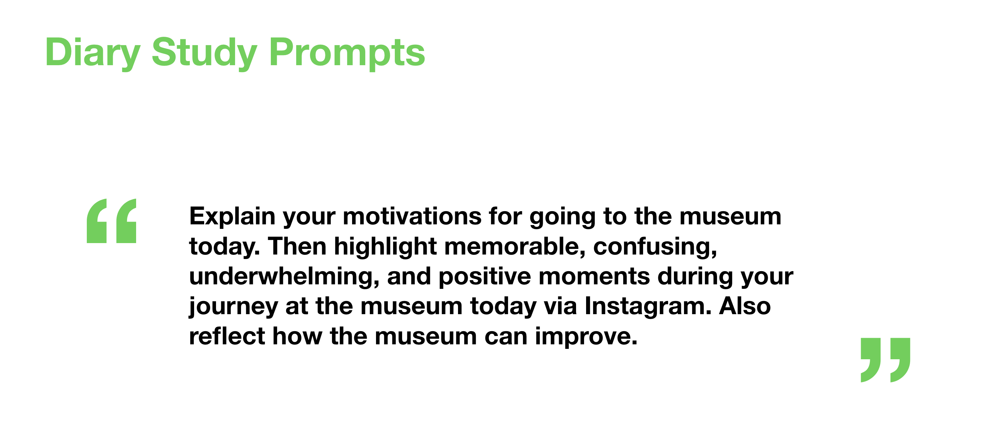
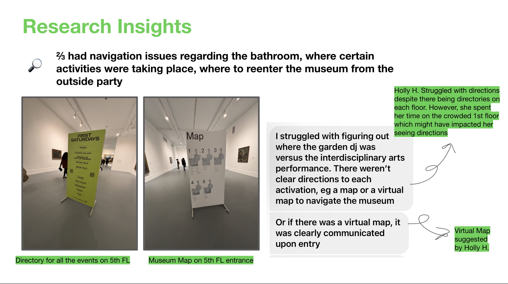
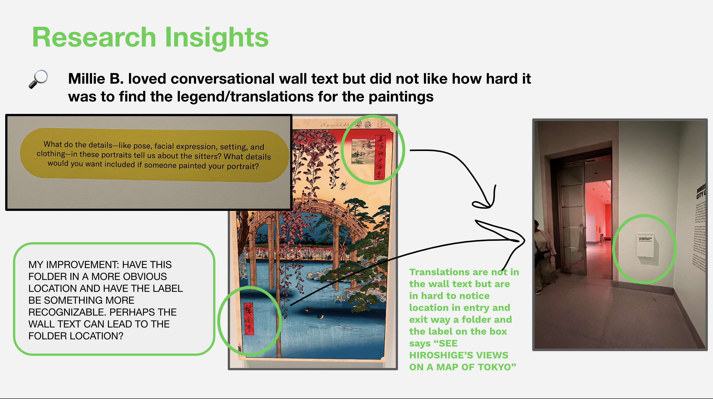
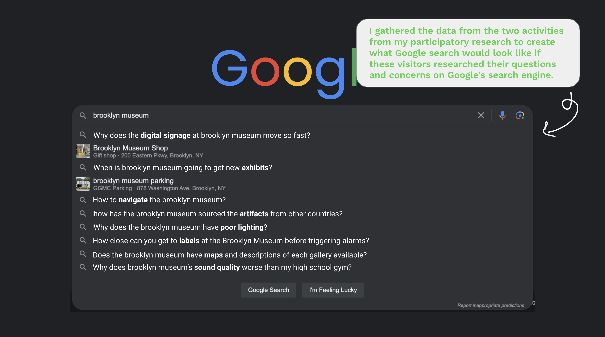
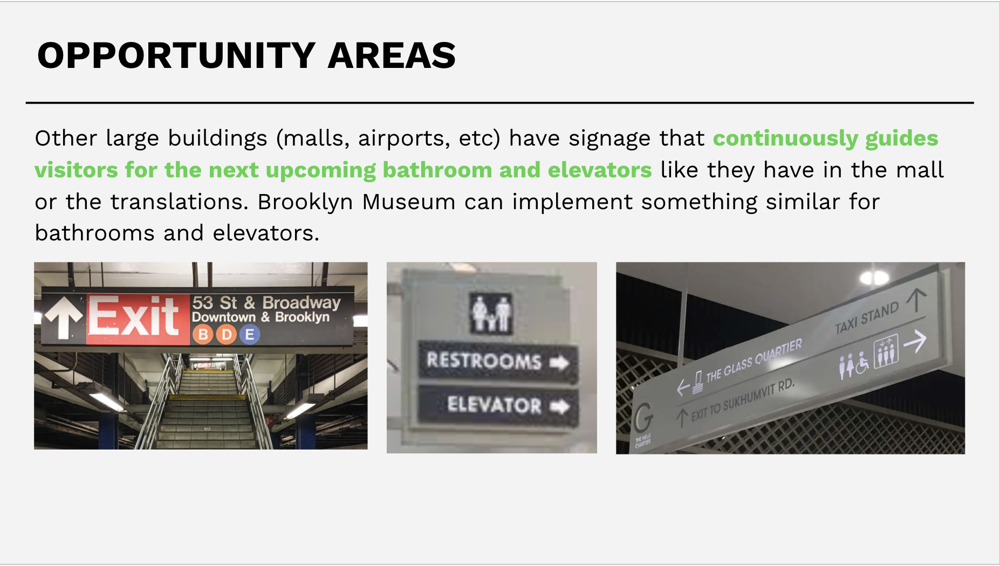
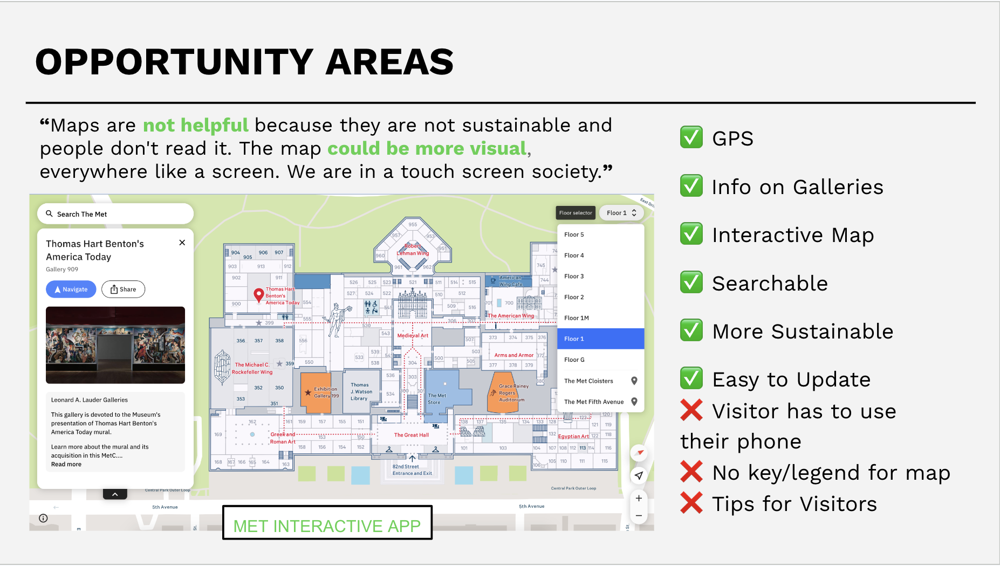

⏰Timeline
Jan 2024 - May 2024
👩🏽🔬My Role
Ethnographic Researcher
🛠Tools Used
- Google Forms
- Miro
👤Team Member(s)
- Dominique Dorvil
1. Research Goal
How might we identify and propose effective strategies for improving visitor experience and engagement at the Brooklyn Museum, that improve wayfinding, information accessibility, crowd management, and labeling ?
2. Recommended Solutions
Interactive Digital Mapping
- GPS-enabled navigation
- Real-time updates
- Sustainable alternative to paper maps
Enhanced Label System
- Proportional sizing relative to artwork
- Strategic placement to prevent alarm triggering
- Clear explanatory text
Lighting & Wayfinding Improvements
- Signs placed above eye level
- Proper lighting that prevent glare on art
- Lighting and larger font sizes to enable reading of placards
9. Overview
The Brooklyn museum is an art museum in Brooklyn, New York, making it the biggest cultural institution in that borough. It is also the 2nd largest museum in New York City. The client has expressed interest in uncovering the pain points experienced by the museum's visitors and solutions to them.
3. Methodology
Survey
Participants: 7
Recent Visits: 50% within past 3 months
Participatory Research
Participants: 13 Reddit Users
Experience: 100% "First Saturday" event attendees
Diary Study
Participants: 2
Experience: Conducted the study on "First Saturday" event
Interviews
In Depth Interview Participants: 2
Ad Hoc Interview Participants: 4
Age Range: 24-60 years
Membership: 100% non-members
4. Personas
5. Diary Study Insights
  6. Participatory Research Insights
The participatory research conducted through surveys and Reddit comments revealed that visitors' concerns extended beyond basic facility navigation. Through analysis of visitor search patterns, I identified common queries that pointed to systemic issues and created a Google Search to represent them.
7. Issues & Solutions
WAYFINDING ISSUES
WAYFINDING SOLUTIONS
 SMALL LABEL ISSUE & SOLUTION
SMALL LABEL SOLUTION
increase font size to improve legibility and ensure that the placard size is relative to the art peice.
INFORMATION ACCESSIBILITY
8. Lessons Learned
- Conducting diary studies can be difficult because without your supervision, participants can blow you off. 6 participants committed to conduct the diary study but only 2 people actually did it.
- Participants LOVE incentives.
- While participants are experts of their own experiences, they state their opinions as facts.
9. Next Steps
Out of the 6 actionable recommendations I developed to enhance visitor engagement, accessibility, and overall museum experience, the client has expressed interest in implementing at least 50% of these recommendations.